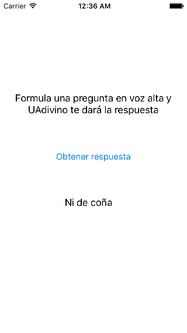
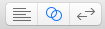
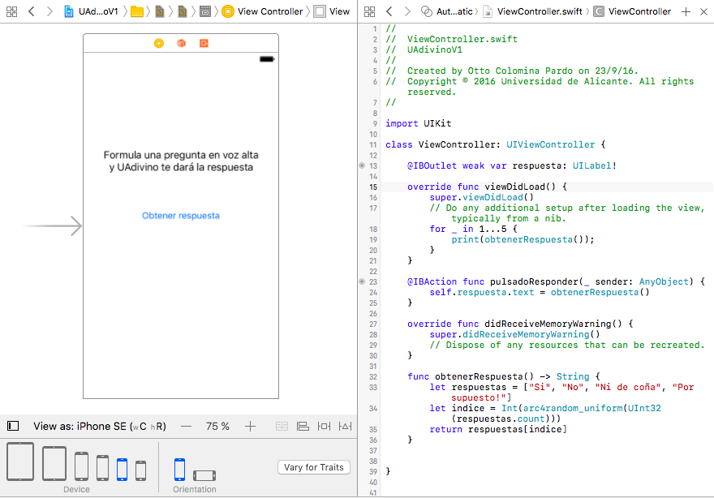
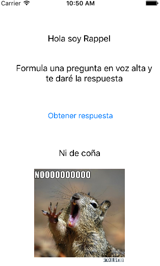

Vamos a implementar una pequeña aplicación que funciona de forma similar a la típica "bola 8". Formulamos una pregunta en voz alta, y nuestro "adivino", al pulsar un botón nos dará una respuesta positiva o negativa. Algo como la siguiente imagen

Vamos a hacer un par de versiones según vayamos viendo características de Swift, y luego ampliaremos la aplicación.
Las dos primeras versiones de la aplicación serán desarrolladas de forma guiada, se dejará el código en la web por si lo necesitáis. A partir de ahí tendréis que añadir una nueva funcionalidad e internacionalizar la aplicación.
UAdivino con Swift sin orientación a objetos (0.75 puntos)Necesitamos alguna clase donde poder colocar nuestro código. Vamos a hacerlo en el ViewController, que en el MVC de iOS es el controlador*, el pegamento entre vista y modelo.
En la clase ViewController añadimos un nuevo método para obtener una respuesta al azar generada por el adivino:
func obtenerRespuesta() -> String {
let respuestas = ["Si", "No", "Ni de coña", "Por supuesto!"]
let indice = Int(arc4random_uniform(UInt32(respuestas.count)))
return respuestas[indice]
}Para comprobar que funciona, ve dentro del mismo archivo al método
viewDidLoad(). Este método se ejecuta cuando se carga la vista asociada al controlador. Escribe allí un bucle que llame aobtenerRespuesta()10 veces y vaya imprimiendo con
Lo que hemos escrito antes sería nuestro modelo, la lógica de nuestra aplicación. Aunque en este caso es muy sencilla y el modelo un tanto pobre ya que hemos insertado directamente el código en el controlador en lugar de tener un modelo orientado a objetos.
De las tres piezas de MVC nos falta por tanto la vista. Para ello abriremos el archivo Main.storyboard haciendo clic sobre él. Aparecerá una pantalla en blanco de iPhone. Aquí debemos añadir los componentes gráficos de nuestra aplicación. En la esquina inferior derecha de Xcode podemos seleccionar el componente que necesitemos y "arrastrarlo" hasta la pantalla del storyboard. Podemos filtrar la lista de componentes escribiendo en el cuadro de texto de su parte inferior. Necesitamos:
label para el mensaje de "Formula una pregunta en voz alta...". Un label es un componente que muestra texto que no va a editar el usuario. Puede ser totalmente estático, como en este caso, y también podemos modificar el texto por código, como veremos.button para el "Obtener respuesta".label para la respuesta del adivino. Como vemos esta no es estática sino que la cambiamos a través de nuestro código de programa.Arrastra los tres componentes hasta el lugar adecuado. Luego edita el texto del primer label y del botón para que se correspondan con lo necesario en la aplicación.
La comunicación entre los elementos de la interfaz y nuestro código se produce en las dos direcciones:
action: se usan cuando queremos reaccionar a un evento producido sobre la interfaz de usuario. En nuestro caso la única que nos interesa es la pulsación sobre el botón de "Obtener respuesta". Le diremos a Xcode que cuando se produzca el evento llame a determinado método del código del controlador.outlet: es una variable que representa un elemento de la interfaz de usuario. Leyendo o cambiando sus propiedades podemos cambiar la apariencia o el contenido de este elemento. En nuestro caso nos interesa cambiar el texto de la label con la respuesta. Los action y los outlet se crean de la misma forma. Necesitamos ver simultáneamente el storyboard y el código fuente donde queremos crear el action o el outlet. Para ello se usa el assistant editor de Xcode.
Estando editando el storyboard pasamos al assistant editor pulsando sobre el correspondiente botón de la esquina superior derecha de Xcode

La pantalla se dividirá en dos, para mostrar tanto el storyboard como el código Swift que queremos conectar.

Para crear el outlet asociado al label con la respuesta del adivino, pulsar la tecla Ctrl y arrastrar desde el label en el storyboard hasta un lugar en el código de ViewController.swift donde se pueda insertar una nueva propiedad. En el menú popup que aparecerá al soltar el botón del ratón seleccionar como Connection el tipo outlet, y como name teclear el nombre que queremos que tenga la nueva propiedad, por ejemplo respuestaLabel. En el código fuente aparecerá una nueva propiedad:
@IBOutlet weak var respuestaLabel: UILabel!Para crear el action asociado al botón "Obtener respuesta", hacer lo mismo que con el outlet: pulsar la tecla Ctrl y arrastrar desde el botón hasta un lugar en el código de ViewController.swift donde se pueda insertar un nuevo método.
En el menú popup que aparecerá al soltar el botón del ratón seleccionar como Connection el tipo action, y como name teclear el nombre del método que se va a crear en el código, por ejemplo botonPulsado. Aparecerá el esqueleto del método, que debemos rellenar con el código adecuado. En este caso algo que obtenga una respuesta del adivino al azar y la copie en el texto del label. En código iOS un label es una instancia de UILabel y su propiedad text representa el texto.
self.respuestaLabel.text = obtenerRespuesta()Comprueba que la aplicación funciona correctamente. Si es así, haz un commit con la opción de menú Source control > commit..., con el mensaje "versión 1: sin objetos".
UAdivino con Swift orientado a objetos (0.75 puntos)Vamos a hacer una nueva versión de la aplicación, con código orientado a objetos. Haremos una clase UAdivino. Para ello ir a la opción de menú de File > New > File... y en el cuadro de diálogo seleccionar Swift File. En el siguiente paso llamarlo UAdivino. Copiar el siguiente código en el fuente:
class UAdivino {
let respuestas = ["Si", "No", "Ni de coña", "Por supuesto!"];
func obtenerRespuesta() -> String {
let indice = Int(arc4random_uniform(UInt32(respuestas.count)));
return respuestas[indice];
}
}Básicamente es lo mismo que teníamos antes pero encapsulado en una clase. Las posibles respuestas pasan a ser una propiedad de la clase en lugar de estar definidas en el método.
Debemos modificar el ViewController para que use el nuevo código. Elimina la definición de func obtenerRespuesta() que había en ViewController.swift. Ahora nos falta crear una nueva instancia de UAdivino cuando se cargue la pantalla asociada al ViewController. Para ello, debemos:
ViewController que almacene una instancia de UAdivino:var miAdivino = UAdivino()botonPulsado (sustituyendo al anterior). Recordemos que este método se dispara automáticamente cuando se pulsa en el botón "Obtener respuesta"self.respuestaLabel.text = self.miAdivino.obtenerRespuesta()Comprueba que la aplicación funciona correctamente, y si es así haz otro commit con el mensaje "versión 2: con objetos"
UAdivinoVamos a hacer que el adivino tenga un nombre, que aparecerá en pantalla. Además del "Formula una pregunta en voz alta..." antes aparecerá un "Hola, soy XXX". Haz que este texto aparezca en un label distinto al de "Formula una pregunta..."
Sí, se podría incluir el nombre del adivino en el "formula una pregunta...", pero la idea es que así practiquéis añadiendo algo nuevo a la interfaz y luego accediendo a ello con un nuevo
outlet
Tendrás que hacer las siguientes modificaciones/añadidos:
En el código de UAdivino
nombreEn el storyboard
label en el storyboard para el nuevo mensajeoutlet entre el storyboard y el ViewController, para representar en código Swift a la nueva label. Recuerda que se hace en el assistant editor con Ctrl+arrastrar entre la label y el código fuenteEn el ViewController
miAdivino por una nueva, que le pase el nombre (que estará fijo en el código fuente)var miAdivino = UAdivino(nombre: "Rappel") //O como se llame el vuestro...viewDidLoad() escribe código Swift que actualice el nuevo label con el mensaje "Hola soy" y el nombre del adivino.Una vez compruebes que la aplicación funciona haz un nuevo commit y pon como comentario "Ejercicio 1.3.1" (o sea, sesión 1, ejercicio 3, apartado 1).
Queremos que además de la respuesta en modo texto aparezca una imagen u otra indicando el carácter positivo/negativo de la respuesta.

Al ser la respuesta solo un texto en lenguaje natural de ella no es fácil deducir automáticamente si significa "Sí" o "No". Por tanto para cada respuesta además del texto almacenaremos un booleano indicando el tipo.
Tendrás que hacer las siguientes modificaciones:
En el proyecto Xcode tenemos que añadir las imágenes:
Assets.xcassets del proyecto.appIcon)En el storyboard:
Image Viewimage view con una propiedad que llamarás imagen en el código fuente de ViewController (recuerda que es en el assistant editor y con Ctrl+arrastrar)En el archivo UAdivino.swift
struct llamado Respuesta para almacenar el texto y el tipo de respuestastruct Respuesta {
var texto: String
var tipo: Bool
}UAdivino, cambia la definición de la propiedad respuestas, ahora será un array de structs Respuestalet respuestas = [
Respuesta(texto: "Si", tipo: true),
Respuesta(texto: "No", tipo: false),
Respuesta(texto: "Ni de coña", tipo: false),
Respuesta(texto: "¡Claro que sí!", tipo: true)
]obtenerRespuesta. Ahora debe devolver un Respuesta, no un StringEn el ViewController
botonPulsado, que responde a la pulsación sobre el botón "Obtener Respuesta", cambia el código, modificándolo como necesites. Recuerda que ahora obtenerRespuesta devuelve una instancia de Respuesta y no un String. Para cargar la imagen puedes usar un inicializador de UIImage que carga una imagen por nombre://suponiendo que el outlet se llama "imagen", como decíamos antes
//La propiedad "image" del objeto UIImage es la imagen en sí
self.imagen.image = UIImage(named:"si")Evidentemente en caso de que el tipo de la respuesta sea true debes cargar la imagen llamada "si" pero en caso contrario debes cargar la "no"
{kind=link}
{kind=link}